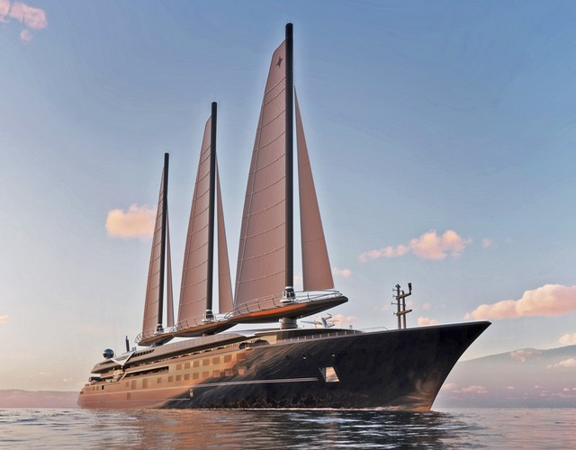
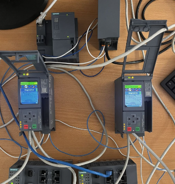
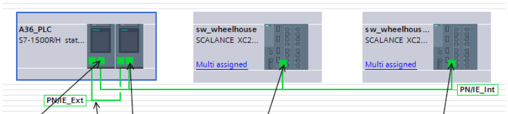

Projet A36 — Orient Express Corinthian
⚓ Synchronisation NTP · Redondance automates · Paquebot à voiles automatisées
Le projet A36 porte sur la mise en cohérence de l'automatisation des voiles rigides de l'Orient Express Corinthian. Ces voiles doivent s'orienter automatiquement, se coordonner entre elles et se mettre en sécurité en cas de conditions défavorables. L'ensemble repose sur des automates Siemens S7-1515R-2 PN qui échangent en permanence des données.
Deux problématiques centrales structurent le projet : la cohérence temporelle (tous les équipements partagent la même heure pour une traçabilité fiable) et la continuité de service (le système doit rester opérationnel même en cas de défaillance d'un automate).
- Mettre en place une synchronisation horaire centralisée via NTP — tous les automates partagent une référence de temps commune
- Garantir la continuité de service via deux automates redondants (primaire / secondaire)
- Assurer un basculement automatique transparent lors d'une défaillance du primaire
- Proposer une organisation logicielle modulaire sous TIA Portal, lisible et maintenable par plusieurs automaticiens
- Architecture réseau — deux sous-réseaux distincts : PN/IE_Int (communications internes, 192.168.0.xx) et PN/IE_Ext (synchronisation NTP, 10.10.10.xx)
- Organisation logicielle TIA Portal — structure modulaire 00.System / 01.FC / 02.DB / 03.FB, lisible par toute l'équipe
- Bloc FC_PrimaryID — utilisation de l'instruction
RH_GetPrimaryIDpour identifier dynamiquement quel automate est actif - Bloc FC_SNTP — activation du serveur NTP uniquement sur l'automate primaire, sélection dynamique de l'interface réseau selon le rôle actif
- Gestion des basculements — détection du changement de primaire, redémarrage contrôlé du service NTP avec temporisateur anti-rebond
- Tests sur banc B36 représentatif du système réel — validation de la synchronisation, des basculements et de la chaîne complète jusqu'au PC de supervision
- Intégration sur le système A36 réel à bord du navire via l'automaticien de l'agence Montoir
Le banc repose sur deux automates redondants S7-1515R-2 PN (PLC_Mast_A et PLC_Mast_B), une CPU 1512SP-1 PN jouant le rôle de serveur NTP, deux switchs industriels SCALANCE XC216-4C interconnectés en anneau PROFINET, et un PC de supervision. L'anneau garantit la continuité des communications en cas de rupture d'un lien.
Le principe retenu : un seul automate diffuse l'heure à la fois. Lorsque le rôle bascule, le programme identifie le nouveau primaire, change l'interface réseau active et relance proprement le service NTP — sans qu'aucune incohérence ne soit visible côté supervision.
- Synchronisation horaire validée entre les deux automates redondants et le serveur NTP simulé
- Basculements primaire/secondaire transparents — aucune interruption de la diffusion de l'heure
- Chaîne complète serveur NTP → automates redondants → PC supervision opérationnelle
- Solution intégrée sur le système A36 réel à bord du navire avant les essais à quai et en mer
- Concevoir — analyse du besoin, architecture réseau, organisation logicielle
- Intégrer — insertion dans un programme collaboratif multi-automaticiens, gestion de versions OneDrive
- Vérifier — tests progressifs sur banc représentatif, validation basculements et supervision
- Maintenir — code modulaire lisible, structuration facilitant les évolutions futures
Visuels du Projet


